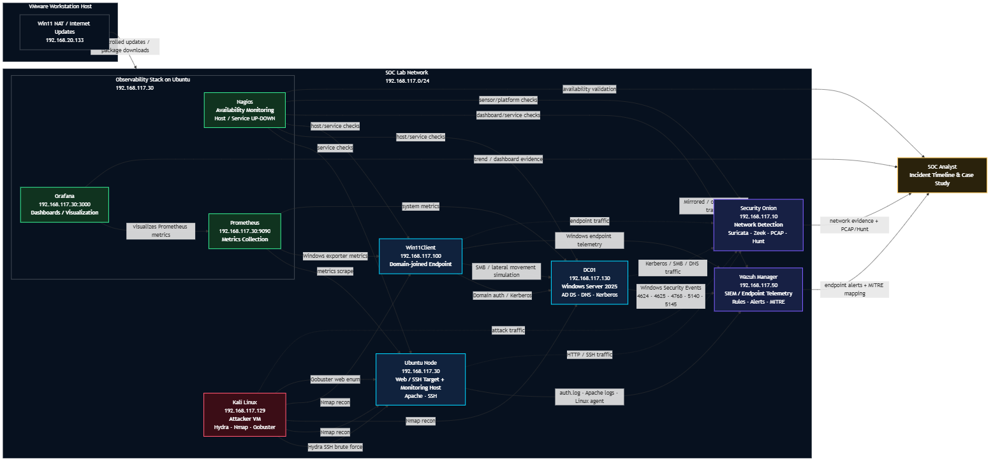
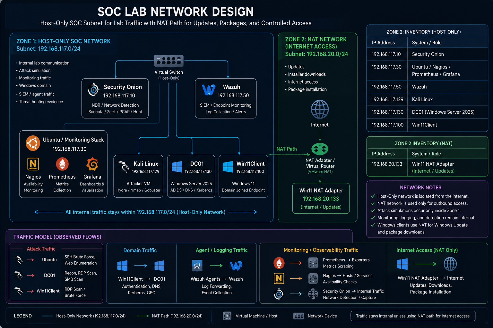
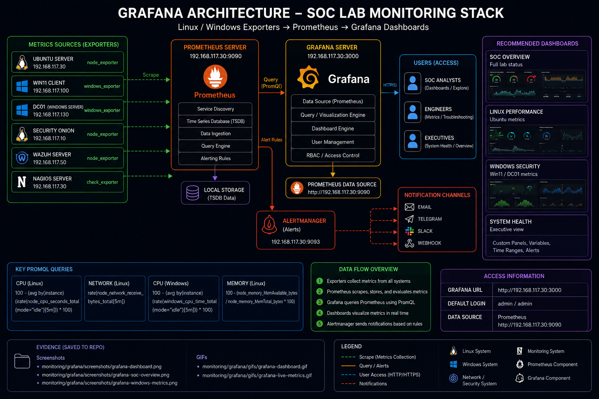
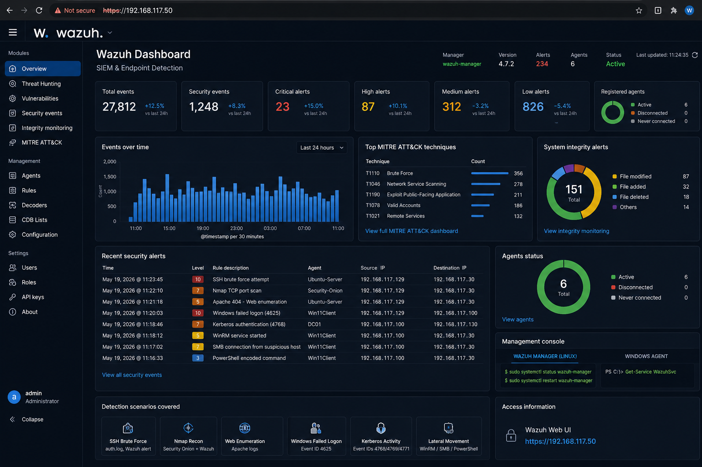
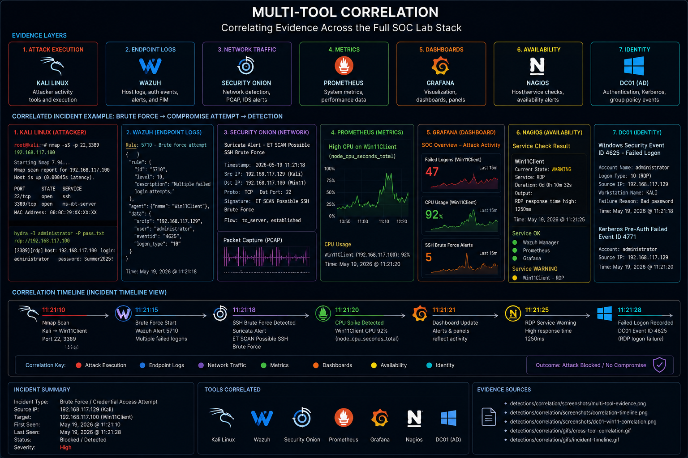
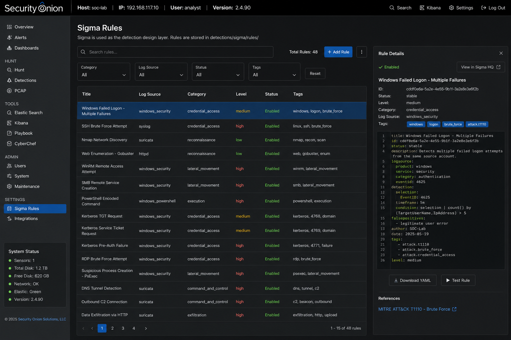
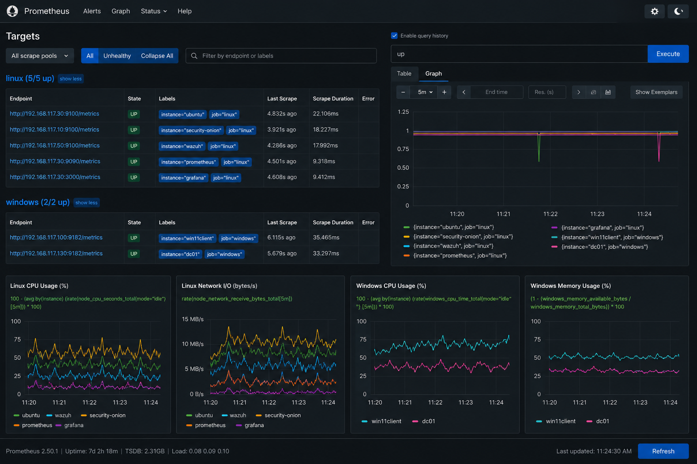
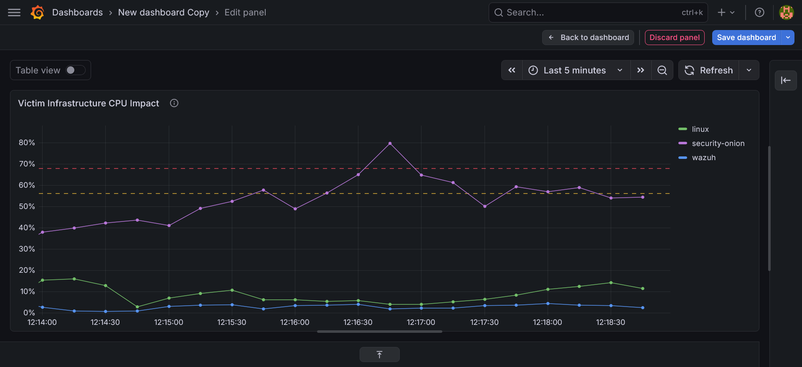
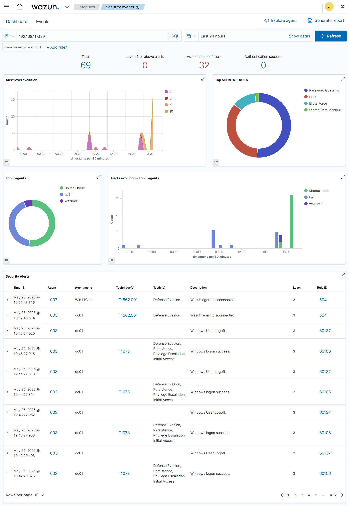

Elite SOC portfolio
From attack simulation to clear defensive evidence.
A polished SOC portfolio that connects Windows Server 2025 Active Directory, Windows 11, Kali, Ubuntu, Wazuh, Security Onion, Nagios, Prometheus, and Grafana into one interview-ready blue-team story.
soc-demo.sh
$
Hydra SSH brute force
Show attacker action, Ubuntu authentication failures, Wazuh alerts, Security Onion traffic, and Prometheus context as one clean evidence chain.
Nmap active scanning
Use reconnaissance as an early-warning narrative before exploitation begins, mapped to MITRE and validated with network evidence.
Prometheus + Nagios
Prove the lab is not only about alerts, but also uptime, trends, target health, and operational maturity.
SOC Lab Tour
Full Enterprise SOC Environment
End-to-end visibility across Security Onion, Wazuh, Active Directory, Windows 11, Ubuntu, Kali Linux, Nagios, Prometheus, and Grafana.
Enterprise SOC Overview
Attack ➜ Detection ➜ Investigation
This walkthrough demonstrates how attacks launched from Kali Linux are observed through Security Onion, detected by Wazuh, validated through Nagios and Prometheus, visualized in Grafana, and documented through analyst workflows.
Security OnionWazuhWindows Server 2025Windows 11UbuntuKali LinuxNagiosPrometheusGrafana
SOC Workflow
How Threats Become Evidence
Every attack simulation follows a structured enterprise investigation workflow.
1
Attack
Kali launches Hydra, Nmap, Gobuster or Windows attack simulations.
→
2
Telemetry
Windows, Linux, Apache, Sysmon and authentication logs are generated.
→
3
Detection
Wazuh and Security Onion identify suspicious activity.
→
4
Correlation
Endpoint, network and infrastructure evidence are connected.
→
5
Reporting
Analyst investigation and MITRE ATT&CK reporting are completed.
Architecture
Full-stack lab architecture
Click any diagram to inspect it fullscreen.

Full Stack Architecture
SIEM, NDR, metrics, dashboards, Active Directory, attacker host, and monitored endpoints.
View overview docs
Network Design
Host-only SOC subnet for lab traffic with NAT path for updates, packages, and controlled access.
View network zones
Grafana Layer
Prometheus metrics visualized through Grafana to support operational and detection narratives.
View Grafana docsAttack simulations
Attack stories with full-screen demo previews
Attack
SSH Brute Force
Hydra against Ubuntu SSH with Wazuh, Security Onion, Nagios, and Prometheus correlation.

Attack
Network Recon
Nmap against Ubuntu, DC01, and Win11Client, mapped to network service discovery.

Attack
Web Enumeration
Gobuster-style directory discovery with Apache log evidence and network visibility.

Detection engineering
Endpoint, network, and correlation evidence

WazuhCustom Wazuh Rules
Custom XML detections mapped to MITRE for brute force, recon, and suspicious activity.
View Wazuh docs
CorrelationMulti-tool Correlation
Endpoint logs, network evidence, metrics, and availability checks tied into one investigation.
View correlation docs
Threat huntingSecurity Onion Hunt
Zeek, Suricata, Hunt, and PCAP-style workflows used to validate the network side of attacks.
View Sigma docsObservability stack
Nagios, Prometheus, and Grafana
Click screenshots to view fullscreen.
 Availability
AvailabilityNagios
Service-state awareness for monitored hosts and critical lab services.
View Nagios docs
MetricsPrometheus
Time-series metrics for Windows, Linux, and infrastructure targets.
View Prometheus docs
DashboardsGrafana
Dashboards for resource trends, attack windows, and operational presentation.
View Grafana docsMITRE ATT&CK
Technique mapping recruiters recognize quickly
Brute Force
Hydra against SSH on Ubuntu. Logged in authentication sources, surfaced in Wazuh, and validated with network evidence.
Network Service Discovery
Nmap reconnaissance across the lab to enumerate hosts and services before exploitation.
Wordlist Scanning
Gobuster-based web enumeration tied to Apache logs, traffic evidence, and service monitoring context.
Featured Evidence
Analyst Screenshots
Click to inspect evidence fullscreen with zoom.

Wazuh Alert

Security Onion Hunt
Grafana Dashboard

Windows Event Logs
Case-study reporting
Incident reports written like real deliverables
Incident 01 · SSH brute force
Controlled Hydra attack against Ubuntu SSH with host, network, uptime, and metrics correlation.
Open reportIncident 02 · Nmap reconnaissance
Pre-attack active scanning documented as suspicious discovery activity and early warning signal.
Open reportIncident 03 · Web enumeration
Gobuster-based directory scanning tied to web logs, network observations, and performance context.
Open reportInterview Pitch
Why This SOC Lab Exists
I built this Enterprise SOC Lab to demonstrate practical blue-team capabilities including attack simulation, endpoint detection, network visibility, Active Directory monitoring, observability, threat hunting and incident reporting.
Next step
Ready to show this live in interviews
Replace placeholders with real screenshots, MP4 demos, GIF fallbacks, and your final CV PDF, then publish the site.